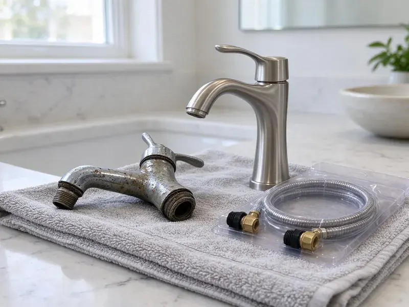

Gas Water Heater Replacement in Edmond, OK
When your gas water heater gives out in Edmond, OK, JBK Plumbing is ready. We offer expert replacement, getting your home back to comfort.
- Trusted Brands
- Old Heater Haul-Away Included
- Transparent Pricing
- Upfront Pricing

Need a New Gas Water Heater in Edmond, OK?
We provide professional installation, so your new gas water heater operates efficiently and safely.
Your Go-To for Gas Water Heater Replacement in Edmond, OK
When it is time for a new gas water heater in your Edmond home, JBK Plumbing is your trusted partner. We assess your hot water needs, recommend the best unit for your household, and perform a safe, code-compliant replacement that stands the test of time.
Our expertise includes:
- Precise gas line connections and venting.
- Atmospheric, power vent and direct vent gas tank installs
- Careful Venting and Gas Line Installation

Additional Plumbing Replacement Services in Edmond, OK
When repairs are no longer enough, our replacement services in Edmond, OK deliver durable upgrades that restore full performance.


Customers
Why Choose JBK Plumbing for Gas Water Heater Replacement in Edmond, OK?
Choosing JBK Plumbing for your gas water heater replacement means choosing peace of mind. We focus on safety and efficiency, so your new unit operates the way it should.
- Quality Brands, We partner with leading manufacturers like Rheem, Bradford White and A. O. Smith, so you receive a durable and efficient gas water heater.
- Code Upgrades, We bring straps, venting, drain pans and relief lines up to current code during the swap.
- Upfront Pricing, You get a flat installed price that covers the tank, parts, permit and removal of the old unit.
Citywide Coverage
JBK Plumbing proudly serves every neighborhood of Edmond for gas water heater replacement and understands the diverse housing styles and plumbing systems throughout the area. Whether you are in an older home or a new build, we are ready to provide expert service.
Experienced Team
Our team has installed thousands of tank water heaters and understands how each brand's gas control and burner assembly works. That experience means fewer surprises and a cleaner final install.
Safety-First Approach
Gas water heaters can leak gas or carbon monoxide when installed poorly, so we leak test every connection and verify proper draft before we leave. Sediment traps and new flex connectors are part of every job.
Trusted Certified Edmond Plumbing Services Professionals
At JBK Plumbing, we take pride in providing licensed, certified plumbing services throughout Edmond, OK. Backed by leading industry credentials, our experienced plumbers combine technical skill with genuine customer care. Whether it is repair, installation, or maintenance, we follow strict safety and quality standards to deliver long-lasting results you can trust.
Call Us Now PHCC Plumbing Contractor Recognition
PHCC Plumbing Contractor Recognition Better Business Bureau (BBB) Accreditation
Better Business Bureau (BBB) Accreditation Angi Certified Pro
Angi Certified Pro ISO 9001 Quality Management Certification
ISO 9001 Quality Management CertificationProfessional Gas Water Heater Replacement Services in Edmond, OK
Propane Gas Water Heater Replacement in Edmond, OK
For homes outside the natural gas grid in Edmond, OK, or those that rely on propane, we offer specialized propane gas water heater replacement services. Our team is experienced with propane systems, confirming correct gas line sizing, proper combustion and safe venting. We will replace your old propane unit with a new, dependable model. All connections are secure and up to code for propane gas appliances.

Standard Gas Water Heater Replacement in Edmond
Most homes in Edmond use a conventional tank-style gas water heater. We carefully remove your old unit, inspect the existing gas and water lines, and install a new, energy-efficient model. Our service includes proper venting setup and ensuring all connections are leak-free and secure. We work with various tank sizes to match your household's hot water demand, balancing efficiency and longevity in your local climate.
Standard Vent Gas Water Heater Replacement in Edmond
Many homes in Edmond rely on standard atmospheric vent gas water heaters. When these units reach the end of their lifespan, typically 10 to 12 years, we provide expert replacement. Our service includes safely disconnecting the old unit, installing a new, energy-efficient model, and connecting it properly to your existing natural gas line and flue venting system. We also check for adequate combustion air and perform a thorough leak test for safety and efficiency.
Tankless Gas Water Heater Conversion in Edmond
If you are looking to switch from a traditional tank to a tankless gas water heater, JBK Plumbing can manage the entire conversion in Edmond. This often involves upgrading gas lines to handle higher BTU requirements and possibly modifying venting systems. We assess your home's setup for a seamless and code-compliant transition, providing endless hot water on demand.
Rheem Gas Water Heater Replacement in Edmond, OK
For reliable Rheem gas water heater replacement in Edmond, OK, trust JBK Plumbing. Rheem offers a wide range of models, from standard tanks to high-efficiency options, suitable for various household needs. Our experts guide you through the selection process and perform a professional installation. We follow all local codes and set the unit up for optimal performance and safety for years to come.
40 and 50 Gallon Tank Replacement in Edmond
The 40 and 50 gallon gas tank is the workhorse of most Oklahoma homes. When yours starts leaking from the bottom seam or produces rusty water, replacement is the only real fix. We match the new tank's height and diameter to your space and reuse the venting when it is in good shape. Newer tanks are sometimes taller due to efficiency standards, so we check clearance before ordering. Most of these jobs take about two to three hours.
Gas to Gas Brand Matching in Edmond, OK
Bradford White, Rheem and A.O. Smith each offer tanks with different warranty lengths, anode materials and burner designs. We explain the differences in plain language so you know what you are paying for. Some models offer self-cleaning dip tubes that help with sediment in hard water. Others include powered anodes that resist corrosion longer. We help you choose based on your budget and how long you plan to stay in the home.

High-Efficiency Gas Water Heater Upgrades in Edmond, OK
Thinking about an upgrade? JBK Plumbing offers high-efficiency gas water heater replacement options in Edmond, OK that can significantly reduce your energy bills. These units often feature improved insulation and combustion technology. We will help you choose the right model based on your home's layout, existing gas line capacity and hot water usage. The goal is to increase your savings and comfort without giving up performance.
Gas Water Heater Replacement Near Me in Edmond, OK
Our team is always ready to respond to your gas water heater needs across Edmond, so you do not have to wait long for hot water. With a focus on prompt service and quality workmanship, we are the clear choice for residents seeking trusted plumbing professionals nearby.
Looking for gas water heater replacement near me in Edmond, OK? JBK Plumbing is your local expert, providing fast and reliable service right in your neighborhood. We understand the plumbing needs of homes in this area, from local water conditions to compliance with municipal codes.
JBK Plumbing at a Glance
- Fully licensed plumbing team covering Edmond, OK
- Same-day appointments and 24/7 emergency response
- Upfront, flat-rate pricing before work begins
- 4.8-star rated by 318+ Oklahoma customers
Edmond Map
Edmond Information
- Population
- 98,103
- Area codes
- 405/580/918
- Service area
- Edmond and communities within 40 miles
- Nearby
- Midwest City, Oklahoma City, Moore, Norman
Summer heat shrinks clay soil around foundations, which can shift slabs and stress the plumbing beneath them. Garage water heaters in Edmond, OK also collect sediment over time, so a properly vented and flushed gas tank replacement protects both safety and tank life.
Expert Services
Trust our professionals for reliable JBK Plumbing solutions in Edmond, OK.
Our Specialized Plumbing Services in Edmond, OK
At JBK Plumbing, we provide a complete range of plumbing services across Edmond, OK. From leak detection to full system installations, our team ensures fast, precise, and affordable service for both residential and commercial properties. Explore our core services below:


How Our Gas Water Heater Replacement Service Works in Edmond, OK
Our gas water heater replacement process is designed to be simple and efficient, minimizing disruption to your Edmond home.
Request a Quote
Contact JBK Plumbing by calling (405) 507-8396 or filling out our online form to schedule an initial consultation. We will discuss your current water heater issues and your hot water needs.
On-Site Assessment
Our licensed technician will visit your home in Edmond to assess your existing gas water heater, evaluate your plumbing system and recommend good replacement options.
Expert Installation
We handle the removal of your old unit and careful installation of your new gas water heater, including all gas, water and vent connections, built to code.
Frequently Asked Questions About Gas Water Heater Replacement in Edmond
The cost for gas water heater replacement in Edmond, OK typically ranges from $1,200 to $3,500, depending on the unit size, brand, efficiency and any needed plumbing changes. Factors like gas line upgrades or ventilation improvements can impact the final price.
If your home has a pressure regulator or backflow device, heated water has nowhere to expand. An expansion tank absorbs that pressure and protects the heater and fixtures.
Absolutely. Modern gas water heaters are significantly more energy-efficient than older models, especially if your current unit is over 10 years old. Upgrading can lead to noticeable savings on your monthly utility bills by reducing gas use.
JBK Plumbing installs and services all major brands of gas water heaters, including Rheem, Bradford White, A. O. Smith, State and more. We help you choose the best brand and model to suit your needs and budget.
Replacing a gas water heater involves working with gas lines, water connections and venting, which can be dangerous if not done correctly. It is strongly recommended to hire a licensed professional like JBK Plumbing for safety and code compliance.
Most new gas water heaters come with a manufacturer's warranty, usually covering the tank for 6 to 10 years and parts for 1 to 2 years. JBK Plumbing also provides a labor warranty on our installation for added peace of mind.
In most cases, yes. We carry common sizes on our trucks and can usually finish in about three hours.
Water pooling at the base, rusty hot water, rumbling or popping sounds and a tank over 10 years old are typical signs. A leak from the tank itself cannot be repaired.
What People Are Saying About Our Plumbing Experts?

Robert G.
The trenchless sewer replacement saved our front yard. They walked us through the camera inspection footage first so we knew exactly what we were paying for.
Sewer Line Replacement · Moore, OK
Laura S.
I scheduled a water heater replacement, and the team made the process smooth and affordable. The new unit works perfectly, and they cleaned up after completing the job.
Water Heater Replacement · Edmond, OK
Mark T.
When our office needed drain cleaning, JBK Plumbing provided quick, reliable service. The plumber arrived on time and made sure every drain flowed perfectly before leaving. Very satisfied.
Drain Cleaning · Norman, OKSofia M.
Two new toilets installed in one visit, no mess left behind, and the tech even adjusted a faucet he noticed was dripping. Fair pricing and really friendly.
Toilet Installation · Stillwater, OK
Daniel K.
A pipe burst at 11 pm and they actually answered. The plumber showed up within the hour, shut everything down, and had us back to normal the next morning. Could not ask for more.
Emergency Plumbing · Midwest City, OKJames P.
Our commercial plumbing system had a leak under the sink, and JBK Plumbing handled it professionally. The plumbers arrived quickly and restored everything without disruption to our customers.
Commercial Plumbing · Shawnee, OK